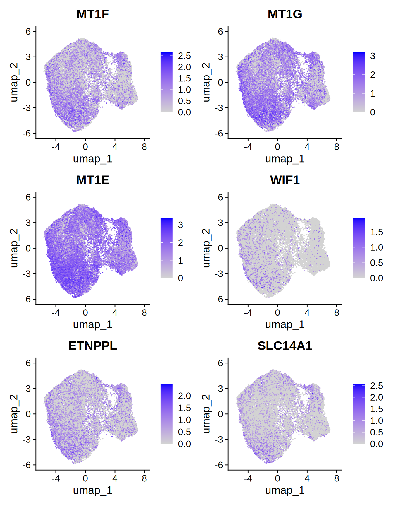
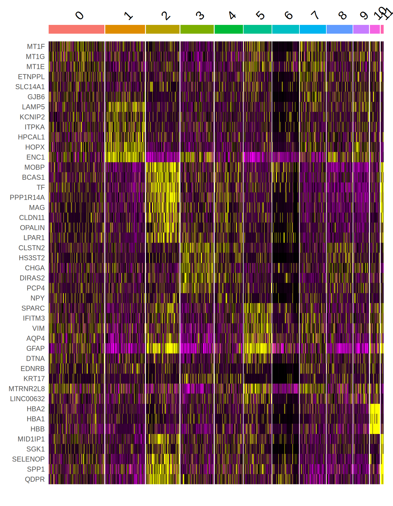
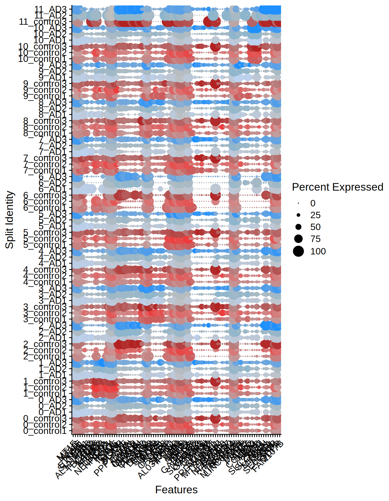
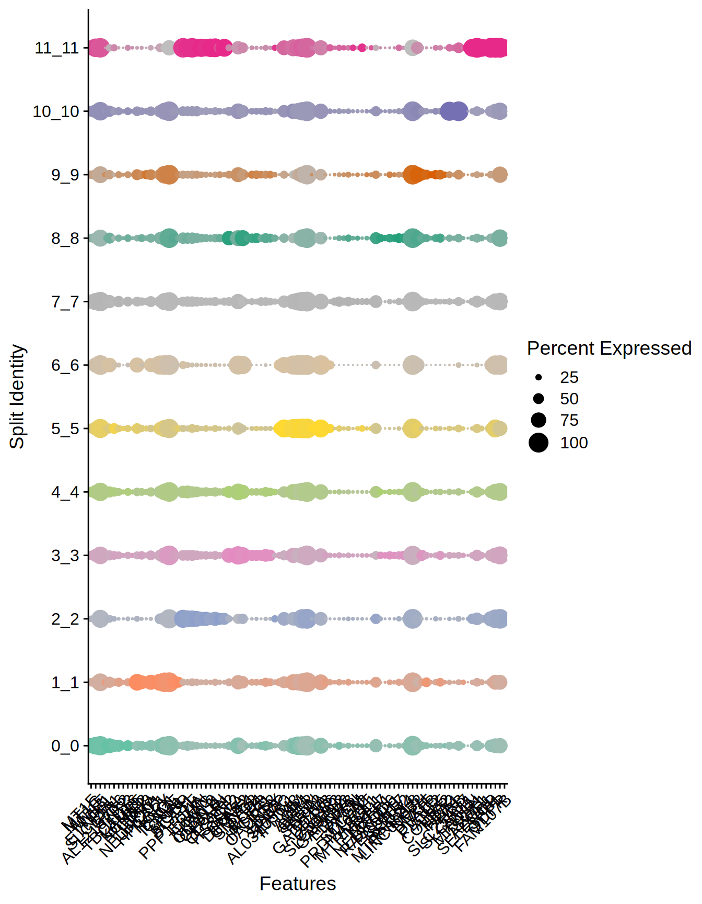

Chapter 5 Differential gene expression analysis
5.1 Differential gene expression analysis
Let’s now focus on identitying markers that can distinguish the different cell types in the dataset. Let’s use the function FindAllMarkers.
# must switch back to SCT to identify variable markers
Seurat::DefaultAssay(ST011) = "SCT"
# find markers
all_markers = Seurat::FindAllMarkers(
ST011,
only.pos = TRUE,
min.pct = 0.25,
logfc.threshold = 0.25
)Let’s check the top markers for each identified.
## # A tibble: 961 × 7
## # Groups: cluster [12]
## p_val avg_log2FC pct.1 pct.2 p_val_adj cluster gene
## <dbl> <dbl> <dbl> <dbl> <dbl> <fct> <chr>
## 1 0 1.62 0.75 0.409 0 0 MT1F
## 2 0 1.65 0.878 0.624 0 0 MT1G
## 3 0 1.04 0.97 0.913 0 0 MT1E
## 4 3.14e-293 1.58 0.375 0.145 7.04e-289 0 WIF1
## 5 1.99e-291 1.00 0.728 0.506 4.46e-287 0 ETNPPL
## 6 1.40e-286 1.12 0.592 0.325 3.14e-282 0 SLC14A1
## 7 8.73e-276 1.14 0.57 0.311 1.96e-271 0 GJB6
## 8 2.60e-234 1.49 0.334 0.135 5.82e-230 0 AL121820.2
## 9 2.02e-190 1.00 0.509 0.298 4.52e-186 0 TNS3
## 10 2.57e-115 1.08 0.276 0.138 5.76e-111 0 TBC1D16
## # ℹ 951 more rowsLet’s visualize the top 6 in a UMAP plot.

Figure 5.1: Top 6 markers
Let’s visualize the top 10 markers that differentiate between clusters with a heatmap.
# get the genes
top10_genes = all_markers %>%
group_by(cluster) %>%
dplyr::filter(avg_log2FC > 1) %>%
slice_head(n = 10) %>%
ungroup()
# plot
p1 = Seurat::DoHeatmap(ST011, features = top10_genes$gene) + NoLegend()
p1

Figure 5.2: Top markers heatmap
We can also check the distribution of the top 10 markers across the different samples and groups.
Seurat::DotPlot(
ST011,
features = unique(top10_genes$gene),
split.by = "orig.ident",
cols = c("indianred", "brown2", "firebrick", "#BCD2EE", "lightskyblue3", "dodgerblue")
) + RotatedAxis()

Figure 5.3: Dotplot top markers per sample
Seurat::DotPlot(
ST011,
features = unique(top10_genes$gene),
split.by = "seurat_clusters",
cols = c(brewer.pal(8, "Set2"), brewer.pal(8, "Dark2"))
) + RotatedAxis()

Figure 5.4: Dotplot top markers per cluster